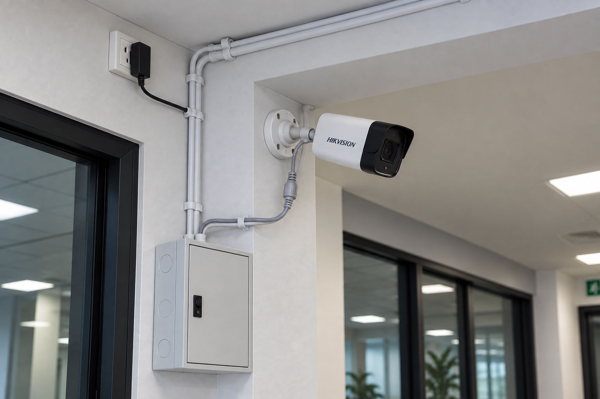
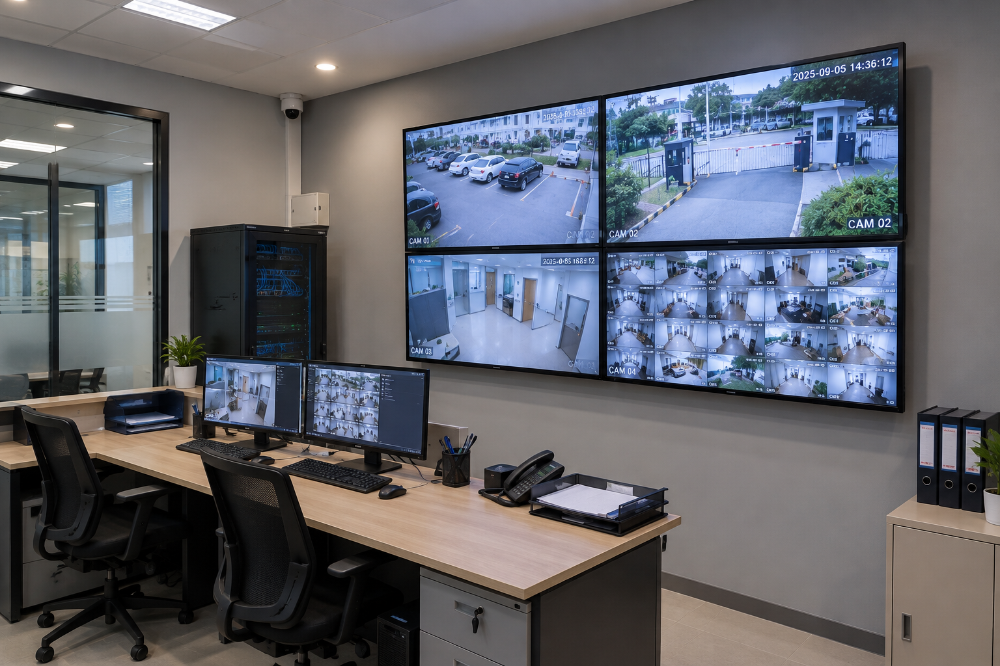
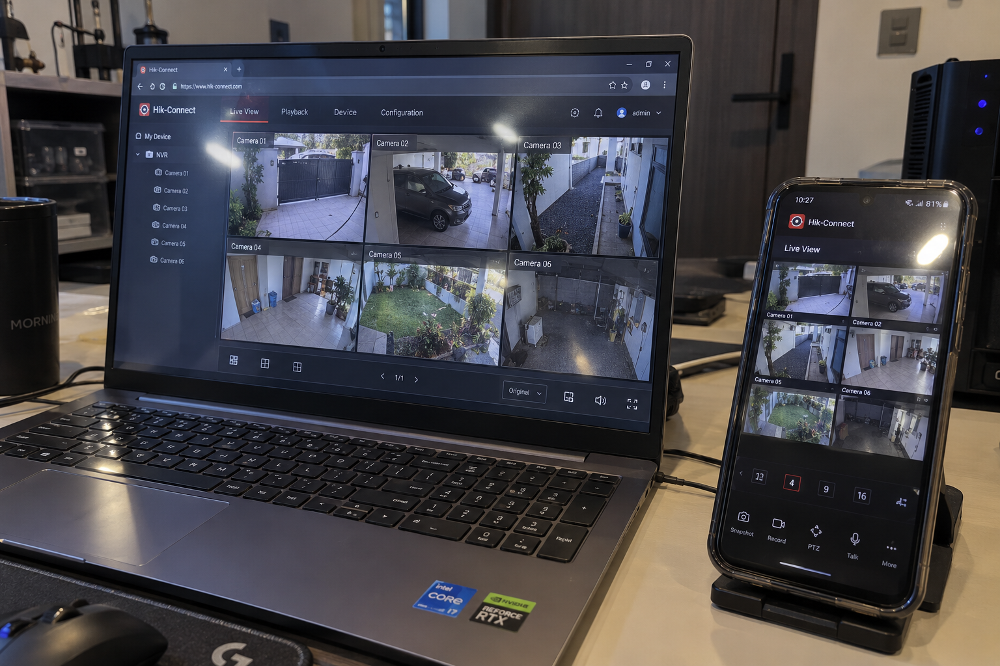
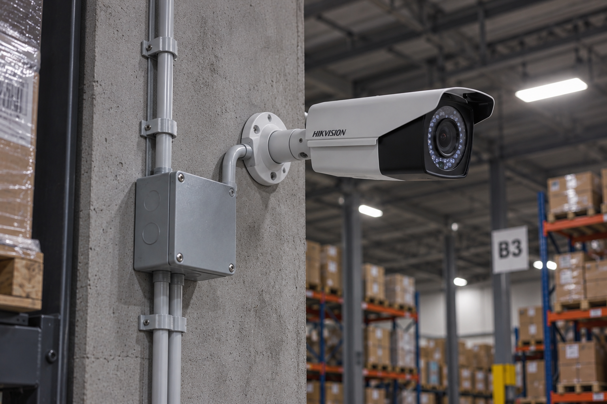

V-Digital CCTV
Penjualan & Jasa Profesional Instalasi CCTV (Dalam & Luar Kota)
Pantau Keamanan Rumah & Bisnis Anda Kapan Saja, Dari Mana Saja
V-Digital menghadirkan layanan instalasi CCTV berkualitas tinggi dengan sistem integrasi modern, terstandar, dan bergaransi.
Konsultasi & Penawaran Gratis
Layanan Utama
- Instalasi CCTV Offline & Online Multi-Channel: Untuk rumah, ruko, kantor, hingga area industri.
- Integrasi Monitor Multi-Platform: Pantau real-time dari HP (Android/iOS), Tablet, atau PC.
- Service, Maintenance & Upgrade: Perbaikan gangguan teknis dan pembaruan unit ke sistem HD/IP terbaru.
Galeri Pengerjaan




Mengapa Memilih V-Digital?
- Perangkat Asli & Brand Terkemuka: Unit kamera berkualitas tinggi dan teruji ketahanannya.
- Integrasi Akses Jarak Jauh: Kemudahan pemantauan 24/7 di genggaman Anda.
- Jangkauan Layanan Luas: Berbasis di Surabaya, melayani area Dalam Kota & Luar Kota.
- Pengalaman 15+ Tahun: Teknisi berjam terbang tinggi yang fleksibel menyesuaikan skema instalasi sesuai permintaan Anda.
- Harga Termurah di Surabaya: Dengan tetap menjaga kualitas layanan dan produk yang dipakai, kami adalah salah satu yang termurah di Surabaya.
3 Langkah Mudah
- Konsultasi: Diskusi kebutuhan titik kamera via WhatsApp.
- Penawaran: Penentuan estimasi biaya secara transparan.
- Pemasangan: Pemasangan langsung di lokasi dan setting hingga siap pakai.